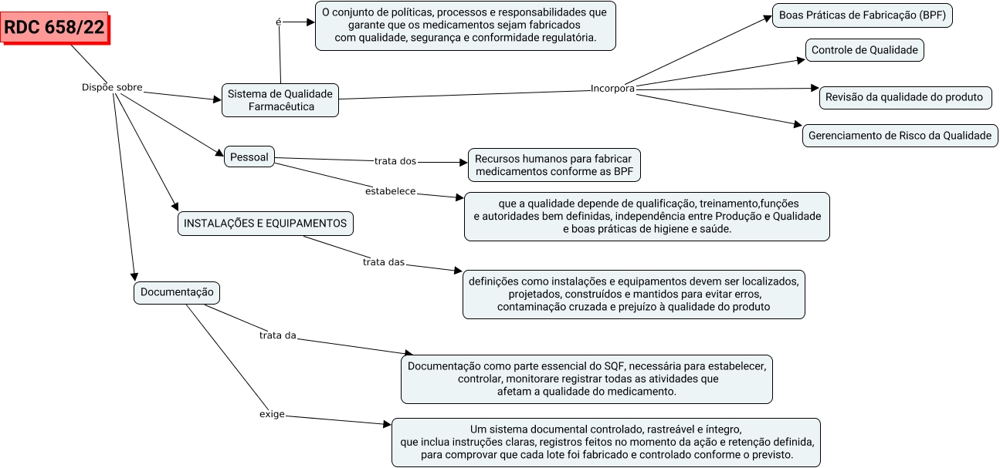

WARNING:
JavaScript is turned OFF. None of the links on this concept map will
work until it is reactivated.
If you need help turning JavaScript On, click here.
Esse mapa conceitual, produzido no IHMC CmapTools, tem a informação relacionada a: rdc 658 2, Sistema de Qualidade Farmacêutica Incorpora Controle de Qualidade, Sistema de Qualidade Farmacêutica Incorpora Boas Práticas de Fabricação (BPF), RDC 658/22 Dispõe sobre INSTALAÇÕES E EQUIPAMENTOS, Sistema de Qualidade Farmacêutica é O conjunto de políticas, processos e responsabilidades que garante que os medicamentos sejam fabricados com qualidade, segurança e conformidade regulatória., RDC 658/22 Dispõe sobre Pessoal, RDC 658/22 Dispõe sobre Sistema de Qualidade Farmacêutica, Pessoal trata dos Recursos humanos para fabricar medicamentos conforme as BPF, Documentação exige Um sistema documental controlado, rastreável e íntegro, que inclua instruções claras, registros feitos no momento da ação e retenção definida, para comprovar que cada lote foi fabricado e controlado conforme o previsto., Documentação trata da Documentação como parte essencial do SQF, necessária para estabelecer, controlar, monitorare registrar todas as atividades que afetam a qualidade do medicamento., RDC 658/22 Dispõe sobre Documentação, INSTALAÇÕES E EQUIPAMENTOS trata das definições como instalações e equipamentos devem ser localizados, projetados, construídos e mantidos para evitar erros, contaminação cruzada e prejuízo à qualidade do produto, Sistema de Qualidade Farmacêutica Incorpora Gerenciamento de Risco da Qualidade, Sistema de Qualidade Farmacêutica Incorpora Revisão da qualidade do produto, Pessoal estabelece que a qualidade depende de qualificação, treinamento,funções e autoridades bem definidas, independência entre Produção e Qualidade e boas práticas de higiene e saúde.
